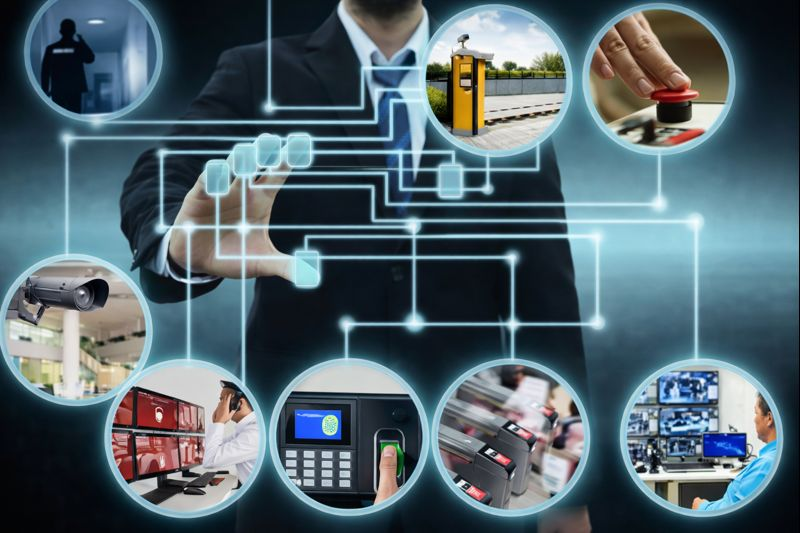

Saya memiliki latar belakang pendidikan Teknik Komputer dan Jaringan serta pengalaman kerja di bidang IT Support dan Security System selama lebih dari lima tahun. Sehari-hari saya terbiasa menangani berbagai kebutuhan teknis seperti troubleshooting hardware dan software, instalasi dan konfigurasi jaringan, serta pemasangan dan pemeliharaan sistem keamanan seperti CCTV, Access Control System, server, dan perangkat pendukung lainnya. Selain pekerjaan teknis, saya juga terbiasa bekerja langsung di lapangan, berkoordinasi dengan tim maupun klien, serta memastikan setiap sistem dapat berjalan dengan stabil dan sesuai kebutuhan operasional. Saat ini saya bekerja sebagai Supervisor Technician, di mana saya terlibat dalam pengelolaan tim teknisi, perencanaan pekerjaan instalasi dan maintenance, serta monitoring kualitas hasil pekerjaan. Saya senang mempelajari teknologi baru, meningkatkan keterampilan teknis, dan mencari solusi yang praktis untuk setiap permasalahan di lapangan.